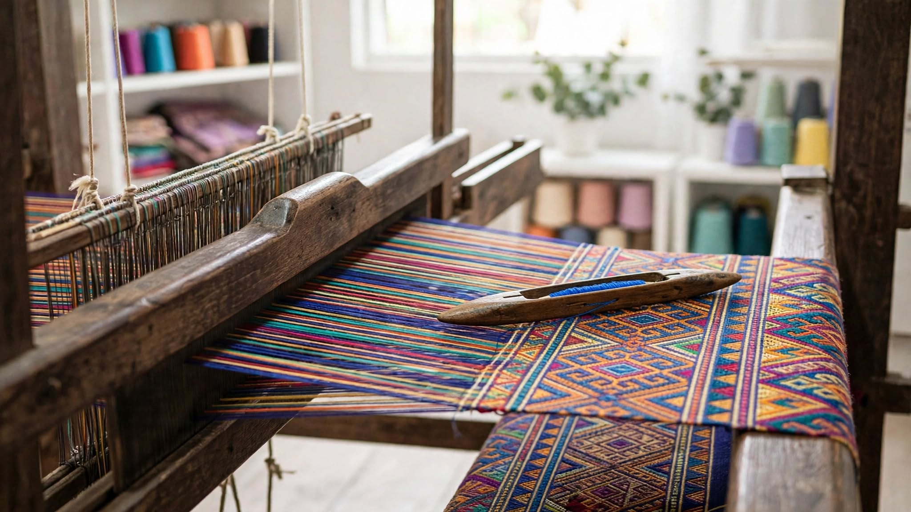

About Loomination
Loomination makes managing weaving drafts freely available to everyone. There's nothing to buy and nothing to install, and you don't need an account to use it.
Who makes it
Loomination is the project of a retired information systems professor whose wife loves to weave. It's built for her, and shared freely with every other weaver.
How it works
Everything follows the same four steps you see across the top of every page. Each step works on the one draft you chose, and a small picture of it stays in the corner so you always know which one that is.
- Choose a draft. Browse thousands of historical drafts in the library, open one of your saved drafts, open a .wif file from any weaving program, read one from a picture of a drawdown, ask a chat AI for suggestions, or start from a blank draft.
- Design. Change the threading, tie-up, treadling and colors and watch the cloth update as you go. You can skip this step if the draft is already just what you want.
- Loom setup. Describe your loom (how many shafts and treadles, what kind of shed, which reeds you own) and get printable instructions for threading, sleying, tying up and treadling the draft on it.
- Warp plan. Enter the size of what you're making and the yarn you'll use to get the number of ends, the warp length and how much yarn of each color you need.
Saving your work
Loomination works without signing in, but then your work is kept only in the browser you're using. Sign in with a Google account, using Save to Google Drive at the top of any step, and your progress is saved and can be recalled anywhere you sign in:
- Drafts you save are kept as .wif files in a Loomination folder in your own Google Drive, so other weaving programs can open them too.
- Your looms, warp plans and yarn stash come back on any computer or phone.
- If you switch to another draft while the current one has unsaved changes, it's saved to My drafts automatically, so nothing is lost.
Where the drafts come from
The library's drafts come from weaving books published in 1930 or earlier, which are in the public domain in the United States, as digitized by Handweaving.net. See the library notes for the sources.